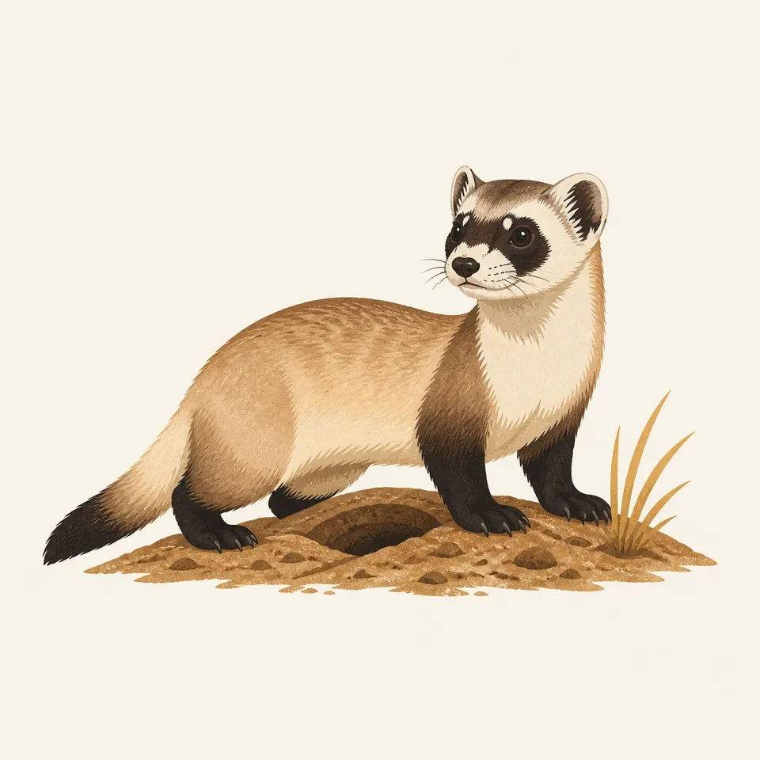
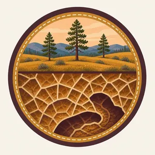

01
Boxwork
Thin calcite blades forming a honeycomb pattern across cave walls and ceilings, found in small amounts elsewhere but nowhere as well-formed and abundant as here; how it forms remains one of the cave's open questions.
TrailMark Archive Edition
South Dakota | Black Hills
Established January 9, 1903, the first cave anywhere designated a national park, above and below a mixed-grass prairie.
Archive No. TM-WICA-062
National Park since 1903
Collection Black Hills Boxwork
Park Overview
Wind Cave National Park was established January 9, 1903, the first cave anywhere in the world to be designated a national park.
The park protects about 33,924 acres of Black Hills prairie and ponderosa pine above a cave system that ranks among the longest, oldest, and most complex on Earth, with the greatest passage volume per cubic mile of any known cave.
Approximately 95 percent of the world's discovered boxwork, a rare honeycomb-patterned mineral formation, occurs within Wind Cave; NPS calls its abundance here unmatched by any other known cave.
Emotional Thesis
The header painting cuts away a grassy Black Hills hillside to reveal thin, intersecting calcite blades, the boxwork pattern, opening into a dark passage below. That cross-section is close to literal: the cave's complexity really does lie directly beneath an ordinary-looking prairie surface.
Lakota oral tradition describes a passageway called Oniya Oshoka, where the earth breathes, known in modern Lakota as Maka Oniye, "breathing earth," said to be where the first humans and bison emerged from the spirit lodge below. At least 20 different Native nations hold ties to this place.
Landscape Highlights
01
Thin calcite blades forming a honeycomb pattern across cave walls and ceilings, found in small amounts elsewhere but nowhere as well-formed and abundant as here; how it forms remains one of the cave's open questions.
02
Only about ten inches wide, the original opening through which wind rushes audibly as barometric pressure equalizes between the cave and the surface.
03
Mixed-grass prairie and ponderosa pine cover the surface directly above one of the densest known cave systems on Earth, bison and prairie dogs grazing with little sign of what lies beneath them.
Wildlife
Black-footed ferrets, reintroduced after a thirty-year absence, depend almost entirely on prairie dog towns for both prey and burrow shelter. The extra drawing, a ferret beside a burrow, is the archive's image of that predator-prey relationship above the cave.

01
Bison and prairie dog colonies share the park's surface prairie, the same grassland ecosystem the reintroduced ferrets now depend on.
02
The 2019 ferret release, raised at the U.S. Fish & Wildlife Service's National Black-footed Ferret Conservation Center in Colorado, was part of a multi-year federal recovery plan for the species.
03
Surface wildlife here is entirely disconnected from the cave's own ecosystem below; the boxwork passages are not a wildlife habitat in the way the prairie above is.
Geology
Boxwork formed along narrow fractures created by stress from gypsum drying and rehydrating; calcite filled those fractures, and the softer surrounding bedrock later eroded away, leaving the calcite honeycomb exposed.
01
Wind Cave ranks among the densest cave systems in the world, with the greatest passage volume per cubic mile of any known cave, by the park's own description.
02
The cave's surveyed length has grown for over a century of exploration; a January 2005 survey brought it to 114 miles and fifth-longest in the world at that time, and mapping continues.
03
Boxwork remains only partly understood; NPS itself calls its precise formation one of the cave's biggest ongoing mysteries.
Peak visitor season for cave tours; the surface prairie can be hot while the cave interior stays cool and constant.
Cooler surface temperatures and active bison movement make this a good season for above-ground wildlife viewing.
Cold, exposed prairie conditions above ground; cave tours continue at the cave's stable interior temperature.
Prairie grasses green up and wildlife becomes more active on the surface as the cave below stays unchanged.
Photography
A single stalactite could be photographed in nearly any cave; the honeycomb pattern of boxwork on a wall or ceiling is specific to Wind Cave in a way few other formations are.
01
Raking light across the calcite blades brings out the honeycomb pattern's depth better than a flat, head-on flash.
02
A surface shot of grassland and bison, paired with a cave interior image, tells the park's actual above-and-below story.
03
Boxwork is a fundamentally different formation from the stalactites and flowstone typical of caves like Carlsbad or Mammoth; keep that distinction visible rather than defaulting to a generic cave shot.
Field Notes
A wind blows out of a hole ten inches wide, and the Lakota called the place where it happens the earth's breath.
TrailMark Field Notes

Badge Story
The badge fails if it looks like any generic cave icon. The specific calcite honeycomb pattern of boxwork is what claims this cave uniquely among the archive's cave parks.
Warm tan and gold calcite against dark cave shadow.
A honeycomb, cross-hatched pattern, not dripstone icicles.
A hint of prairie grass at the top edge ties the mark to the surface world above.
Archive No.062
LocationBlack Hills
ReleaseBoxwork Mark
Stewardship / Safety
Wind Cave is accessible only through ranger-led tours; the surface prairie is home to free-ranging bison that require real distance.
Cave access is by guided tour only; independent cave exploration is not permitted.
Keep well back from bison and other wildlife on the surface prairie; they are wild animals, not park attractions.
Do not touch boxwork or other formations; oils and contact damage delicate calcite structures that took a very long time to form.
Prairie dog towns and the reintroduced ferret population are sensitive to disturbance; stay on designated trails and roads.
Current conditions, fees, and alerts are on the National Park Service site.
Continue the Archive
Mammoth holds the longest surveyed cave system on Earth; Wind Cave holds nearly all its boxwork, a completely different kind of formation. Theodore Roosevelt, in this batch, is the other Great Plains park, with bison and prairie dogs of its own above very different badlands ground.